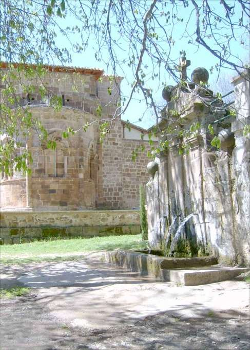
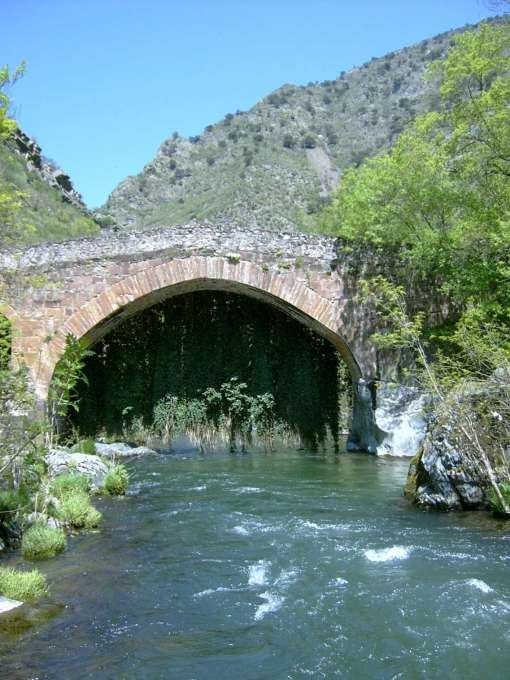
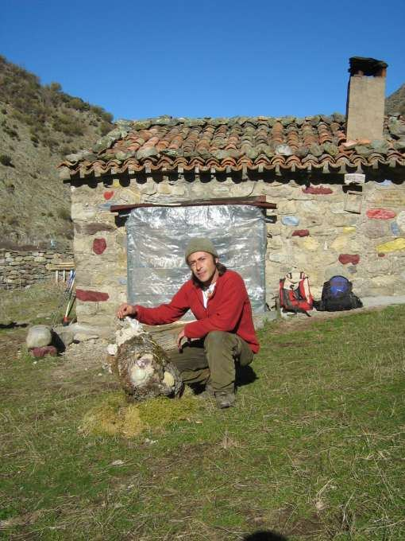
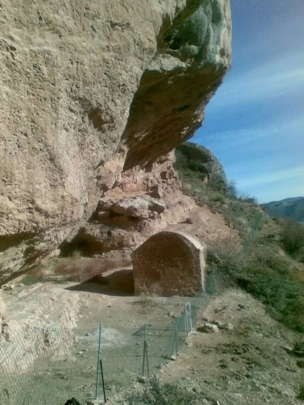
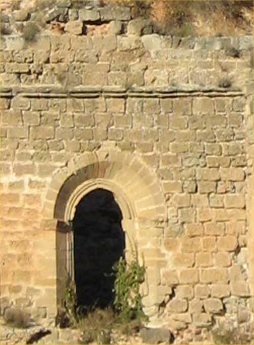
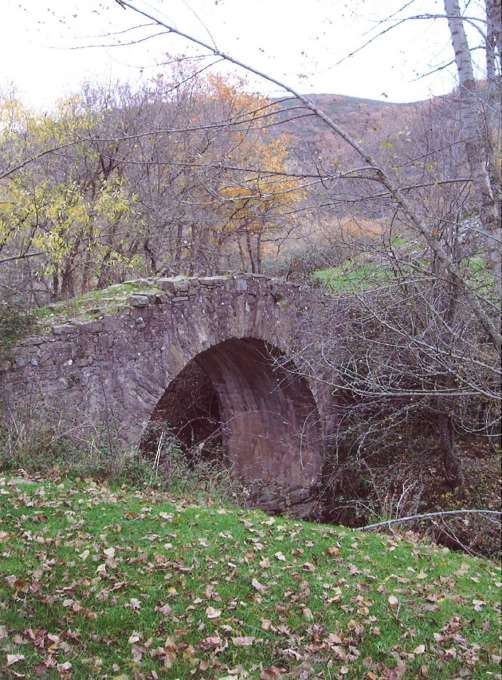

Catálogo
Todas las rutas
Elige comarca, dificultad y distancia, o busca por nombre.

OjaAcebal de Valgañón
Valgañón
 Najerilla
Najerilla
El Rajao
Tobía

NajerillaPuente la Hiedra
Anguiano - Viniegra de Abajo
 Najerilla
Najerilla
Arroyo de Ormazal
Viniegra de Arriba
 Najerilla
Najerilla
Dromedario del Cabezo
Brieva - Ortigosa

NajerillaParaíso Urbión
Viniegra de Arriba - Viniegra de Abajo
 Iregua
Iregua
Monte Laturce
Clavijo
 Iregua
Iregua
Peña Bajenza
Islallana
 Iregua
Iregua
Laguna La Nava
Villoslada de Cameros
 Iregua
Iregua
Cebollera
Villoslada de Cameros

IreguaErmita de San Esteban
Castañares de las Cuevas
 Leza
Leza
Cañón del Leza
Soto en Cameros
 Leza
Leza
Dehesa de San Román
San Román de Cameros

LezaMonasterio de San Prudencio
Ribafrecha - Clavijo

JuberaReinares
Santa Marina
 Cidacos
Cidacos
Barranco de las Puertas
Préjano
 Cidacos
Cidacos
Ermita de Peñalba
Arnedillo
Ninguna ruta cumple esos filtros.